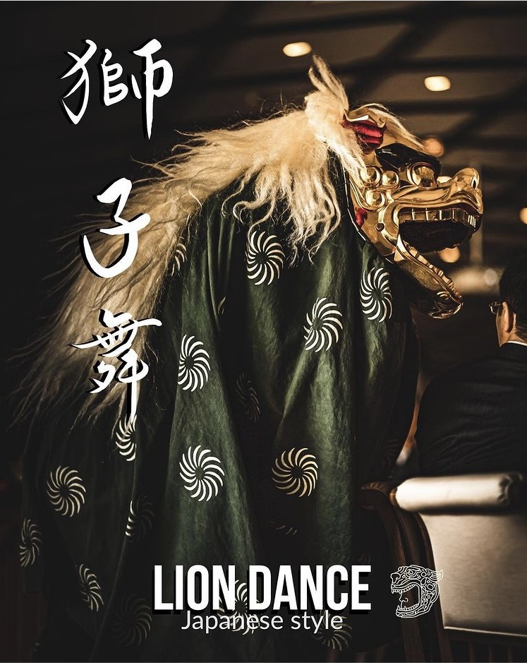
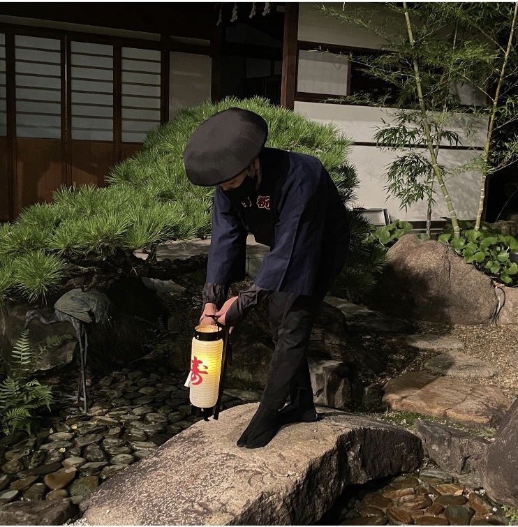

昔、お祝い事と言えば、火消し衆が印半纏にキリリとねじり鉢巻きを締めお餅をついていた事が、歳時記のひとつとして伝えられています。昔の情緒を今に伝えながら威勢良く祝いのお餅をつき上げ、お二人の門出を祝います。祝いの心杵に込め、粋で、いなせに宴を彩るめでたやの祝い芸です。

獅子は厄を払い前途を清めると伝えられています。嚙まれると無病息災、健康に過ごせるそうです。頭をかまれると頭が良くなるとも言い伝えが。ご新郎ご新婦の門出を祝い、前途を清めながら先導します！

古来、花嫁が実家から新郎家へ行列を組んで嫁入りをしていました。この花嫁道中で提灯持ちをしていたのが俥夫です。本日は俥夫が高砂まで、お二人の人生が共に固く歩んで行ける様にしっかりと足元を照らしながら先導致します。
サービス内容サービス内容サービス内容サービス内容サービス内容サービス内容サービス内容サービス内容サービス内容サービス内容サービス内容サービス内容サービス内容サービス内容サービス内容サービス内容サービス内容サービス内容サービス内容サービス内容サービス内容サービス内容サービ160文字
サービス内容サービス内容サービス内容サービス内容サービス内容サービス内容サービス内容サービス内容サービス内容サービス内容サービス内容サービス内容サービス内容サービス内容サービス内容サービス内容サービス内容サービス内容サービス内容サービス内容サービス内容サービス内容サービ160文字